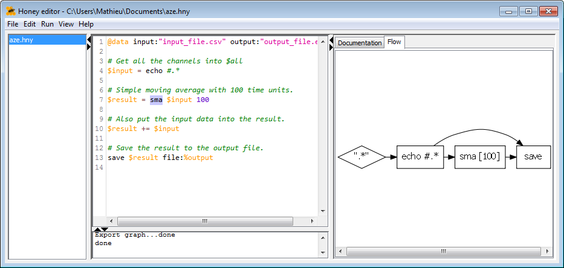

Honey | Beginner guide
Overview
Honey is a small, specialized, high level, efficient, flow-oriented, declarative programming language designed to facilitate the pre-processing, post-processing, and analysis of time series (and more generally symbolic and scalar time series and sequences).

Honey is specifically and only designed to process temporal datasets. For this reason, Honey will certainly not replace completely the existing programming language you are using to make your analysis (e.g. R, MatLab, Python), but it aimed to allow you to execute efficiently and quickly all the operations related to the time nature of your data.
A typical data analytics project will Honey will look like
- [Optionally] Writing a script/sql query to export your data to a CSV file (or other Honey supported formats).
- [Optionally] Using Honey to restructure and convert this CSV file into a Honey binary file (for fast computation).
- Use Honey to "look" at your data, and make sure and better understand it (you would be surprised by the amount of information that you can get on your data if you look at it with the good tools).
- Writing a Honey script, to clean your data, and make some analysis.
- Use Honey Event Viewer to "look" at the result of your analysis. Export some plots or some videos.
- Writing a Honey script (this might be the same as the previous one), to export the results of your analysis (e.g. some plots, tables, text files).
- [Optionally] Use your favorite programming language to plot or to conduct some more non temporal analysis on the tables that Honey has generated.
Some of Honey's notable features are:
- Simple and compact syntax to make Honey programs quick and easy to read and write.
- High level programming that abstract the complexity of dealing with large and asynchronous time sequence datasets. Honey syntax is so simple that it does not have IF or FOR instructions.
- Honey has large library of existing functions developed and validated through several large research projects (medical, financial, fault detection, abnormality detection, etc.).
- It natively support CSV files (Honey has also its own format which is more flexible and more efficient than CSV).
- When compiled, a Honey source file is transformed into a processing flow graph. In this graph, each node represents an operation while each edge represents the input and output of each operation. The Honey binary contains a compiler of Honey program as well as several interpreters (with different properties) of such processing flow graph. This graph might be useful to understand complex Honey programs.
- A program execution can be distributed on several computers (TCP computation distribution).
- Honey comes with its own editor.
- A program can be written and executed seemingly on static or online real time datasets.
- Honey can be interfaced with Event Viewer for static and online real time visualization of the results.
- The syntax naturally forbids the use of future data to produce result in the past (unless explicitly forced). In other words, Honey's syntax guarantees that a script produces similar results on both static and online streaming datasets.
- A program can be executed greedily for large datasets that would not fit in memory.
- For not greedily execution (the dataset can fit in memory), Honey runs a garbage collector mechanism that ensure that only the intermediate results necessary for remaining computation are kept in memory.
- Integrates to other projects with an easy to use API.
- Easy to implement new functions (either as a script function or a new C++ class).
Getting Honey
Your next step is to install Honey on your computer. Honey source code and pre-compiled binaries are available on the download page.
If you want to use Honey with Window, it is likely that you will have to download and install both the "OpenCV DLL Pack for Window" and the "Visual Studio 2013 DLLs" available on the download page.
Honey binaries are available in the "Honey/bin" directory. This directory also contains the Honey Editor and Event Viewer.
To ease the use of Honey, it is recommended to put the "Honey/bin" directory in the PATH of your OS. After which, you will be available to execute Honey directly from the command line.
Note that if you try to run honey without arguments, honey will display its command line reference documentation and terminate instantaneously. Honey is meant to be used in a console, or through the use of the Honey Editor.
Honey can also produce graph plots. Will this is not a requirement; Honey graph plots are very useful to help the understanding of a Honey program. To use Honey graph plot capabilities, you need to install the GraphViz software tool (http://www.graphviz.org/).
Compiling Honey
The Honey package also contains Honey source code. Note that Honey has been successfully compiled on Visual Studio and GCC 5.
Since the Honey package already contains Linux and Window pre-compiled binaries, compiling Honey is not interesting for beginner users.
The Makefile is available in the "Honey" directory. The Visual Studio project is available in the "Honey/project" directory.
Compiling Honey requires the following libraries:
| Library | Window download location | Linux repository name |
|---|---|---|
| Boost C++ | Website | libboost-dev |
| OpengCV | Website | libopencv2-dev |
| TiCpp | Inside of the Event Script project | Inside of the Event Script project |
| Ncurses | Not needed -- Linux only | libncurses-dev |
Learning Honey
Your next step is to real the Honey tutorials organized into three sections: Beginner, intermediate and advanced.
After having read and experimented with the tutorials, you can read:
Need help?
In case of questions or problems, contact me at .